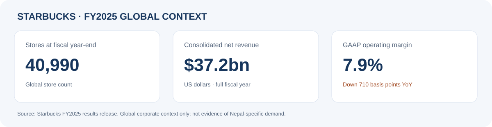
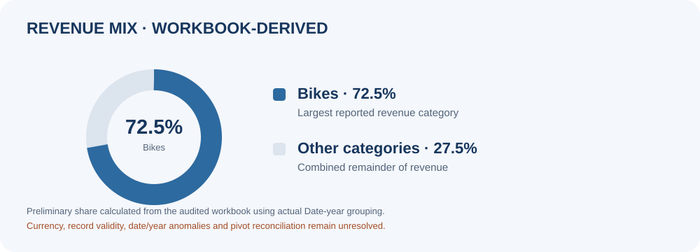
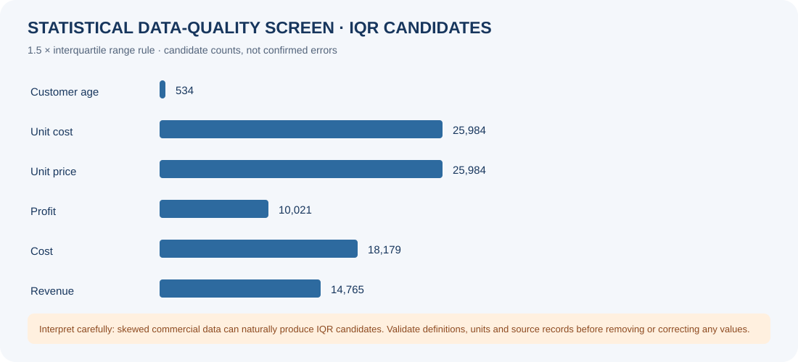

Available for entry-level roles
Solving problems.
Finding insights.
Data analyst and business analyst exploring commercial performance, market-entry strategy, and operational improvement through evidence-led analysis.
Curious about data.
Grounded in business.
I'm a BSc (Hons) Applied Management student at BPP University, building a career in data analysis and business intelligence. I bridge the gap between raw data and business analysis.
My approach combines business understanding with practical analytics. I use Excel, Power BI, SQL and Python to structure information, analyse KPIs, and communicate findings while developing quantitative skills.
My projects explore commercial performance, market-entry strategy, operational improvement and the responsible use of AI workflows. I ask why things happened and what to do next.
View full CVThree questions. Three perspectives.
Key analytical themes from my portfolio of projects.
Understanding customer attrition
How do we identify and retain at-risk customers? Analysis of churn drivers and retention opportunities.

Attrition analysisBeyond the revenue headline
What's driving the numbers? Deep-dive into revenue, cost, and profit across markets and product categories.

Revenue breakdownFinding friction in the workflow
Where does value leak? Process analysis and improvement proposals using frameworks like PDCA and TIMWOODS.

Workflow analysisFrom a better question
to a clearer decision.
Analytical workflow — iterative and evidence-focused.
Building the toolkit.
Keeping the business lens.
Technical skills organised by category.
Excel
PivotTables, lookups, KPI dashboards
Power BI
DAX, dashboard design, visualisation
SQL
Joins, queries, aggregation, SQLite
Python
Pandas, NumPy, data analysis
Let's connect